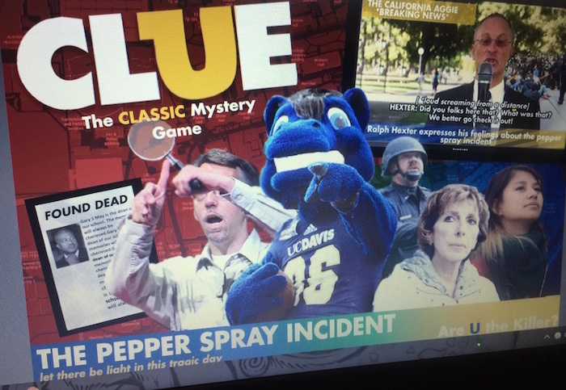
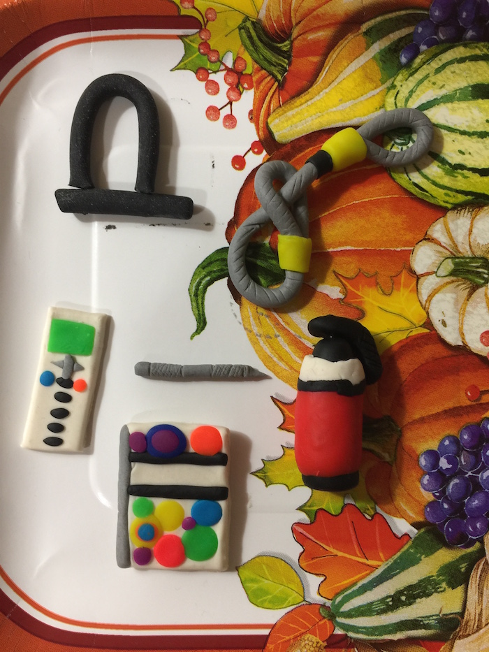
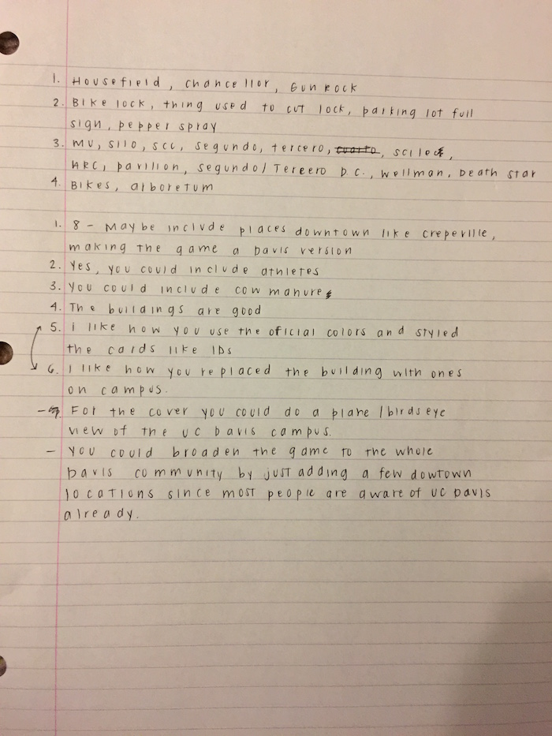

Reflection, Analysis, Theory
(Analytic Process Log)
Assignment 3 reflects and analyzes the key concepts utilized, from the class readings and lectures, to create an effective game or guide for the audience, Assignment 2. The key concepts emphasized in developing a successful game design are visual rhetoric, multimodal compositions, and feedback/feed-forward.
GAME OR GUIDE?
For our first week of process, we learned how to analyze a game and decided whether to illustrate a game or guide design. As prep for this assignment, our class was assigned to a group and an in-class activity that examined the components to each different genre of game: graphics, rules, and mechanics. We explored a card game called “Monster Fluxx”. It provided complex, interchanging rules with easy-to-learn mechanics. My group discussed its portability and graphical theme. For text and rules, a pile of “New Rule” cards are drawn and applied throughout the whole game. The cards were color coded to indicate its purpose: new rule, action, keeper, and goal. The objective and mechanism required the players to draw in the beginning of their turn and finish the tasks (with the use of keepers) laid in the middle. The mechanisms of action cards were the completion of all the tasks written to end the player’s turn. This exercise was crucial for Assignment 2 because it was a basic learning tool on how to utilize its techniques with our game design.
During discussion session, my group decided on producing a UC Davis version of “Clue”. “Clue” is a famous murder mystery board game. “Monster Fluxx” inspired the construction of a UC Davis version of “Clue”. Although “Monster Fluxx” and “Clue” differentiate in game types and genres, both shared similar aspects in relation to game design. Their resemblances contained numerous themed versions, the inclusion complex strategies, and easy-to-follow mechanics. Our goal for the assignment was exchanging each characteristic of “Clue” and constructing a UC Davis version. The specific elements we focused on were the graphics, characters, weapons, buildings, and instructions.
KEY CONCEPTS:
VISUAL RHETORIC
For our second week of process, my group incorporated different categories of people in UC Davis. We used specific characters for our suspects, but each one represented a type of person in UC Davis. For example, Gunrock, our school mascot, was one of the specific suspects we added in our game, but he was representation of the athletes. For the “3 Images for Game or Guide” activity, I posted images of the original Clue’s suspect cards, Katehi, and pepper spray. These images helped the research process because we replaced the original Clue’s suspects and changed them into known characters from UC Davis. The photo of the pepper spray reflected a famous and memorable event in UC Davis. We planned to make pepper spray as one of the weapons as a reference to this specific Davis event. These photos were a necessity to our project due to the extensive research of professors, locations, and weapons required to capture the full essence of UC Davis.
The central focus of our second process log was its visual rhetoric. Visual rhetoric played an important part in our process because as designers, we needed to create an appropriate game that could effectively communicate through our audience. Our visual rhetoric was the tangible product of a UC Davis “Clue” itself. The purpose was to redesign a version of clue that delivered comic relief and nostalgia to anyone associated with UC Davis. The primary audience was our professor and peers in the class. The secondary audience was everyone associated with UC Davis. The context of our design were to integrate suspenseful yet relatable elements that our audience would understand as they played and looked through our game. In Figure 1, each photo of the suspect in our cover box were taken out of its original content and were combined together to create a new suspenseful context. Understanding our game’s visual rhetoric benefitted its effectiveness because of the “primary components of the communication process” delivered in our design (Screven, 137-8). The primary components emphasized for our visual rhetoric is the viewer action. By adding UC Davis humor and suspense in the context, the audience would laugh and reminiscence as a viewer action. Without knowledge of the game’s visual rhetoric, our product’s purpose would fail to cater to our audience.
MULTIMODAL COMPOSITIONS:
By our third process log, our group studied the mechanisms of the game. After, we discussed all the graphical changes required to grasp every aspect of UC Davis. The significant steps we developed were the agreement of all the UC Davis characters, buildings, and weapons. The two programs used were Photoshop and Illustrator. To create miniature weapons, I bought a couple sets of PlayDoh and replicated a simplified sculpture from the weapon pictures. The decisions I made as an individual were inserting a bike circle in the middle of the board where “X” lies and creating the Suspect card layout to be similar to UC Davis student ID cards. These graphical changes were important stepping-stones for our project because it enhanced the relatable aspect of the game. We wanted our UC Davis version fun, creative and filled with nostalgia. An add-on I included were action cards, known as “Bike Cards, which are drawn after a player goes through or lands on a bike symbol in the tiles. This unique twist will make our version more interesting and stand out from the original version.
The key concepts used for our third process log were multimodal compositions. Our game was supported by visual, linguistics, and spatial. It relied on visuals because we changed every graphical part of the original Clue and made it somehow relatable to UCD. We changed the photos (buildings, suspects, weapons), sculpted our own miniature weapons, created the confidential file, designed the game board, and so much more. Sculpting the miniature sculptures “piece by piece, alone in focused concentration is an idyllic pleasure to me (Venezky, 93)”. By hand-making these pieces, it enhanced a realistic experience for the designer and user because of the legitimacy of the texture rather than just looking at a computerized image in a piece of paper (Figure 2). Venezky asks, “Does the materiality of the process improve the outcome? (Venekzy, 93)” Even though most of our products were digitalized through Photoshop and Illustrator, the materials of our game pieces improved the design because we were able to create more durable pieces as tokens rather than printing out thin pieces of full-body images to play our game. Linguistics played a role on because we changed the words that corresponded with the visual. For example, we didn’t just replace Mrs. Scarlet’s photo with Katehi’s, but we also changed the name also. The gameboard corresponded with the use of spatial. Our group made sure to include equal space for each building, provide enough tiles for the playing space, and distributed the bike symbols evenly throughout the board.
FEEDFORWARD AND FEEDBACK
Our forth process revolved on the Usability Test. For our usability test, we decided to conduct a Pre-Survey and a Post-Survey. For the pre-survey, we laid out numerous questions about what UC Davis elements our audience expected to see in our board game. After we had shown our graphical changes through our presentation, we then asked the effectiveness of each and every graphical element from a scale to 1-10, with a small or couple words that could help improve our game. After this, our group read all the peer reviews and jotted down the suggestions to consider.
We received a good amount of feedback, but due to the length of the survey, not many people answered every question. Many of the peers thought that we integrated many clever ideas, but the majority of recommendations included adding the silo and more animals. After reading all the feedback, we decided on five major changes that will help enhance the UC Davis experience of our board game. The changes we made were based on the suggestions our peers made during our post-survey (Figure 3). Figure 3 lists some of the changes considered such as “paper dolls makes game less legit” and the removal of Dutton Hall. With such mixed reviews of using paper dolls as tokens, we changed it into cows with different colored spots. The cow tokens made it easier to play with and overlapped the need of more animals in our game. The second decision was that we replaced Cruess Hall with the Silo and replacing Dutton Hall with Mrak Hall. Mrak Hall and the Silo are more notable to UC Davis students as a whole rather than Cruess Hall, which is exclusively for design majors. The third change we did for our game design is having more positive action cards than negative cards. For my thought process, I wanted the equal opportunity to get either a benefit or a disadvantage, but later, I thought that having more benefits could improve the action card aspect of our game. If there were equivalent or more negatives in our Action Cards, the players will avoid that twist from our game, thus making our design less engaging. With a couple questionable aspects in our game that could lead to a design major bias rather than appealing to the whole UC Davis community, we tried to apply recognition to other impacted majors in UC Davis by adding a different major logo in each card. The last and final change we made is replacing the bike cable with an Apple MacBook.
The key concept that the Usability Test focused on is feedback and feed-forward. In the Game/Guide Feed-forward and Feedback Writing Activity, there were three questions to answer: What is the system, goal, and expectation. The system of our design was the accuracy of our UC Davis elements. The second part of our system was transforming the original clue to a UC Davis version without changing its real mechanics. The importance of the accuracy communicated to audience with relatable content while playing the actual game. There were two main goals our version of “Clue”: 1) finding out who killed Gary S. May, with what weapon and where (the actual objective from the original) and 2) laughing at all humor composed in it. Our expectations for the audience were to enjoy and laugh while playing the game, as they notice all the little jokes we added. During the presentation, we demonstrated each change we made to our audience, thus feed-forward. This was the feed-forward because the action that the user could look through each change that we made for our game. After they’ve seen each change, their reaction became the feedback. Norman discussed that “both feedback and feed-forward need to be presented in a form that is readily interpreted by the people using the system”, indicating that we displayed feedback/feed-forward power point presentation that could be understood by our audience (Norman, 72). The use of feed-forward and feedback helped us in the revision process, because our group were able to indicate what changes worked and what didn’t based on the reactions and comments from the pre-survey and post-survey. This helped us better our design for the user.
THEORY
The key concepts utilized during our design process theorized the significant role the audience plays in the revision process. The designer’s goal is to solve a problem by creating a human-centered design. Each key concept our group used to create our UC Davis “Clue” revolved around the satisfaction of the user. For example, the audience determined how relatable our game is based on their own personal experience at UCD. If us, the designers, failed to trigger the nostalgic aspect of our game, which is the purpose, our design is therefore unsuccessful. For the design process and writing, multiple revisions are required. For our design, we thought that we achieved in making a relatable UC Davis Clue, but based on the Usability test, there were numerous aspects that we could have improved on. To avoid this, multiples tests, experiments and criticisms are needed to perfect a product/design before finalization. The key pattern of revision could be applied anywhere from writing to game designs to even product designs.